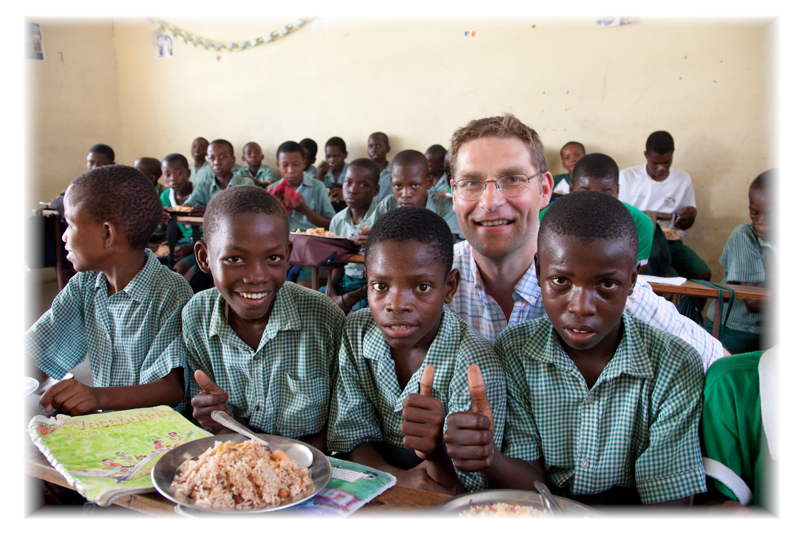

A História de Magnus MacFarlane-Barrow
Introdução
Magnus MacFarlane-Barrow, um escocês de origens humildes, emergiu como uma figura notável no mundo da filantropia global. Sua trajetória extraordinária, desde sua jornada como pescador até se tornar um catalisador para a mudança positiva, é uma inspiração para todos que buscam fazer a diferença em comunidades carentes ao redor do mundo.
Da Pesca à Caridade
Nascido em 1968, MacFarlane-Barrow cresceu nas pitorescas terras escocesas e, por um tempo, seguiu a profissão de pescador, uma tradição em sua família. No entanto, seu destino tomou um rumo inesperado quando, em 2002, ele testemunhou em primeira mão a crise humanitária durante a Guerra Civil em Kosovo. Foi esse encontro com a necessidade desesperada que o inspirou a fundar a Mary's Meals.
A Revolução Silenciosa da Mary's Meals
A Mary's Meals é a realização do sonho de Magnus MacFarlane-Barrow de acabar com a fome e a falta de educação nas comunidades mais carentes do mundo. O movimento começou modestamente, fornecendo refeições para 200 crianças no Malawi, e cresceu para alimentar mais de 1,8 milhão de crianças em escolas e centros de aprendizagem em todo o mundo.
Impacto Humanitário Duradouro
O trabalho incansável de MacFarlane-Barrow e sua equipe na Mary's Meals transcendeu a provisão de refeições. Eles criaram um sistema que atrai crianças para a educação, proporcionando-lhes um futuro melhor e mais esperançoso. Ao garantir que as barrigas das crianças estejam cheias, a Mary's Meals também alimenta suas mentes, permitindo que elas busquem seus sonhos e construam comunidades mais fortes.
Reconhecimento Global e Legado Inspirador
O impacto humanitário de Magnus MacFarlane-Barrow foi reconhecido em todo o mundo. Ele recebeu inúmeros prêmios e honrarias, incluindo o Prêmio Aurora para a Coragem, em 2015. Seu compromisso com a caridade e a solidariedade global inspirou milhões a se envolverem em causas humanitárias e a acreditarem na capacidade de cada indivíduo para criar mudanças positivas.
Conclusão

A história de Magnus MacFarlane-Barrow é uma prova de que um coração compassivo e uma visão apaixonada podem transformar vidas de maneiras extraordinárias. Sua jornada, desde as águas do mar até as salas de aula das nações em desenvolvimento, é um lembrete inspirador de que a bondade e a ação podem transcender fronteiras e criar um impacto duradouro.
Richard P. G. de Carvalho - Jornalista e Escritor
Este artigo foi escrito para WC NEWS. A reprodução deste conteúdo é permitida desde que seja devidamente creditada a fonte.